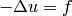
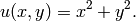
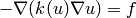
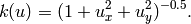
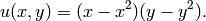
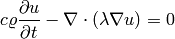
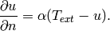
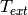
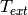

Hermes2D Tutorial: Part VI (Using Trilinos)¶
This section shows how to use Trilinos solvers in Hermes2D.
Trilinos - Linear (40)¶
Git reference: Example trilinos-linear.
The purpose of this example is to show how to use Trilinos for linear PDE problems. The problem is solved in two ways for comparison purposes: First, assembling is done by the LinearProblem class in Hermes and the discrete problem is solved using UMFpack. Second, assembling is done using the FeProblem class in Hermes and the discrete problem is solved using the Trilinos NOX solver (using Newton’s method or JFNK, with or without preconditioning). Note: Assembling in the LinearProblem and FeProblem is the same, these two classes have only marginal difference and they are going to be merged soon. The PDE solved is

with an exact solution

The first part (LinearProblem + UMFpack) needs not be discussed here. The Trilinos part begins with defining a zero initial coefficient vector for the NOX solver:
// Set initial vector for NOX to zero. Alternatively, you can obtain
// an initial vector by projecting init_cond() on the FE space, see below.
coeff_vec->set_zero();
Alternatively, one can obtain an initial vector by projecting the function init_cond() on the FE space:
// Project the initial condition on the FE space.
info("Projecting initial solution on the FE mesh.");
// The NULL pointer means that we do not want the projection result as a Solution.
Solution* sln_tmp = new Solution(mesh, init_cond);
project_global(&space, H2D_H1_NORM, sln_tmp, NULL, coeff_vec);
delete sln_tmp;
The latter approach is not relevant in this simple example (where moreover init_cond() is a zero function) but this projection may be practical in more difficult problems where one wants to start from a nonzero initial condition. Next, perform the following steps:
Initialize the weak formulation:
// Initialize the weak formulation for Trilinos. WeakForm wf2(1, JFNK ? true : false); wf2.add_matrix_form(callback(jacobian_form), H2D_SYM); wf2.add_vector_form(callback(residual_form));
Initialize the FeProblem class:
// Initialize FeProblem. FeProblem* fep = new FeProblem(&wf2, &space);
Initialize NOX solver:
// Initialize NOX solver. NoxSolver* nox_solver = new NoxSolver(fep);
Supply the initial coefficient vector coeff_vec:
nox_solver->set_init_sln(coeff_vec->get_c_array());
If the user wants preconditioning, set a preconditioner:
// Choose preconditioning. RCP<Precond> pc = rcp(new MlPrecond("sa")); if (PRECOND) { if (JFNK) nox_solver->set_precond(pc); else nox_solver->set_precond("ML"); }
See NOX documentation for more preconditioning choices.
Note: RCP stands for Reference Counted Pointer (a sophisticated smart pointer management system). This is a very powerful tool provided by the Teuchos library, whose usage greatly reduces memory corruption related segfaults.
Now we are ready to call the NOX solver to assemble the discrete problem and solve it:
// Assemble and solve using NOX.
bool solved = nox_solver->solve();
The solution vector is extracted from NOX and turned into a Solution as follows:
double *coeffs = nox_solver->get_solution_vector();
sln_nox.set_coeff_vector(&space, coeffs, ndof);
That’s it!
Trilinos - Nonlinear (41)¶
Git reference: Example trilinos-nonlinear.
The purpose of this example is to show how to use Trilinos for nonlinear PDE problems. It compares performance of the Newton’s method in Hermes (assembling via the DiscreteProblem class and matrix problem solution via UMFpack) with the performance of the Trilinos/NOX solver (using the Hermes FeProblem class to assemble discrete problems).
This example is concerned with the nonlinear equation

where

Boundary conditions are chosen zero Dirichlet and a manufactured exact solution has the form

The Trilinos part starts by projecting the function init_cond() on the finite element space to generate an initial coefficient vector for the Newton’s method:
// Project the initial condition on the FE space.
info("Projecting initial condition on the FE space.");
// The NULL pointer means that we do not want the projection result as a Solution.
sln_tmp = new Solution(&mesh, init_cond);
project_global(&space, H2D_H1_NORM, sln_tmp, NULL, coeff_vec);
delete sln_tmp;
Note that since init_cond() is zero in this case, we could have just set the initial coefficient vector to zero as in example 40, but we want to keep the example more general.
Next we initialize the weak formulation (matrix form added only if needed), initialize the FeProblem class, initialize the NOX solver and supply an initial coefficient vector, set preconditioner, and call the NOX solver to assemble and solve the discrete problem:
// Initialize the weak formulation for Trilinos.
WeakForm wf2(1, JFNK ? true : false);
if (!JFNK || (JFNK && PRECOND == 1)) wf2.add_matrix_form(callback(jacobian_form_nox), H2D_SYM);
if (JFNK && PRECOND == 2) wf2.add_matrix_form(callback(precond_form_nox), H2D_SYM);
wf2.add_vector_form(callback(residual_form_nox));
// Initialize FeProblem.
FeProblem fep(&wf2, &space);
// Initialize the NOX solver with the vector "coeff_vec".
info("Initializing NOX.");
NoxSolver nox_solver(&fep);
nox_solver.set_init_sln(coeff_vec->get_c_array());
// Choose preconditioning.
RCP<Precond> pc = rcp(new MlPrecond("sa"));
if (PRECOND)
{
if (JFNK) nox_solver.set_precond(pc);
else nox_solver.set_precond("ML");
}
// Solve the matrix problem using NOX.
info("Assembling by FeProblem, solving by NOX.");
bool solved = nox_solver.solve();
The solution coefficient vector is extracted from NOX as in example 40, and a Solution is created and visualized as usual.
Trilinos - Timedep (42)¶
Git reference: Example trilinos-timedep.
This example shows how to use Trilinos for time-dependent PDE problems. The NOX solver is employed, either using Newton’s method or JFNK, and with or without preconditioning,
We solve a linear heat transfer equation

in a square domain where a Dirichlet boundary condition is prescribed on the bottom edge and the rest of the boundary has a Newton boundary condition

Here  is heat capacity,
is heat capacity,  material density,
material density,  thermal conductivity of the
material,  exterior temperature, and
thermal conductivity of the
material,  exterior temperature, and  heat transfer coefficient.
heat transfer coefficient.
After creating the finite element space as usual, we define a constant initial condition:
// Define constant initial condition.
Solution t_prev_time;
t_prev_time.set_const(&mesh, TEMP_INIT);
Next we register weak forms for the Jacobian and residual:
// Initialize the weak formulation.
WeakForm wf(1, JFNK ? true : false);
wf.add_matrix_form(callback(jacobian));
wf.add_matrix_form_surf(callback(jacobian_surf));
wf.add_vector_form(callback(residual), H2D_ANY, &t_prev_time);
wf.add_vector_form_surf(callback(residual_surf));
Then we initialize the FeProblem class, obtain initial coefficient vector coeff_vec by projecting the initial condition on the finite element space, initialize the NOX solver, and set preconditioner:
// Initialize the finite element problem.
FeProblem fep(&wf, &space);
// Project the function "titer" on the FE space
// in order to obtain initial vector for NOX.
info("Projecting initial solution on the FE mesh.");
Vector* coeff_vec = new AVector(ndof);
project_global(&space, H2D_H1_NORM, &t_prev_time, &t_prev_time, coeff_vec);
// Initialize NOX solver.
NoxSolver solver(&fep);
// Select preconditioner.
RCP<Precond> pc = rcp(new MlPrecond("sa"));
if (PRECOND)
{
if (JFNK) solver.set_precond(pc);
else solver.set_precond("ML");
}
Note that the initial coefficient vector was not provided to NOX yet, this needs to be done in each time step. The time stepping loop is as follows:
for (int ts = 1; total_time <= 2000.0; ts++)
{
info("---- Time step %d, t = %g s", ts, total_time += TAU);
info("Assembling by FeProblem, solving by NOX.");
solver.set_init_sln(coeff_vec->get_c_array());
bool solved = solver.solve();
if (solved)
{
double *coeffs = solver.get_solution_vector();
t_prev_time.set_coeff_vector(&space, coeffs, ndof);
}
else
error("NOX failed.");
// Show the new solution.
Tview.show(&t_prev_time);
info("Number of nonlin iterations: %d (norm of residual: %g)",
solver.get_num_iters(), solver.get_residual());
info("Total number of iterations in linsolver: %d (achieved tolerance in the last step: %g)",
solver.get_num_lin_iters(), solver.get_achieved_tol());
}
Trilinos - Adapt (43)¶
Git reference: Example trilinos-adapt.
The purpose of this example is to show how to use Trilinos while adapting mesh. Solved by NOX solver, either using Newton’s method or JFNK, with or without preconditioning. The underlying problem is benchmark layer-internal.
One little difference vs. benchmark “layer-internal” is that we’ll be solving the finite element problem both on the coarse and fine meshes in each adaptivity step. So, at the beginning of each adaptivity step we initialize the FeProblem class, NOX solver, and preconditioner on the coarse mesh:
info("---- Adaptivity step %d:", as);
// Initialize finite element problem.
FeProblem fep(&wf, &space);
// Initialize NOX solver.
NoxSolver solver(&fep);
// Choose preconditioner.
RCP<Precond> pc = rcp(new MlPrecond("sa"));
if (PRECOND)
{
if (JFNK) solver.set_precond(pc);
else solver.set_precond("ML");
}
Then we assemble and solve on coarse mesh, and convert the resulting coefficient vector into a Solution. Skipping info outputs and visualization, this reads:
// Assemble on coarse mesh and solve the matrix problem using NOX.
bool solved = solver.solve();
if (solved)
{
double* coeffs = solver.get_solution_vector();
sln.set_coeff_vector(&space, coeffs, ndof);
}
else
error("NOX failed on coarse mesh.");
Next we create a uniformly refined mesh and H1 space on it:
// Create uniformly refined reference mesh.
Mesh rmesh; rmesh.copy(&mesh);
rmesh.refine_all_elements();
// Reference FE space.
H1Space rspace(&rmesh, bc_types, essential_bc_values, P_INIT);
int order_increase = 1;
rspace.copy_orders(&space, order_increase); // increase orders by one
Then the FeProblem, NOX solver and preconditioner are initialized on the fine mesh:
// Initialize FE problem on reference mesh.
FeProblem ref_fep(&wf, &rspace);
// Initialize NOX solver.
NoxSolver ref_solver(&ref_fep);
if (PRECOND)
{
if (JFNK) ref_solver.set_precond(pc);
else ref_solver.set_precond("ML");
}
Fine mesh problem is solved and the solution coefficient vector converted into a Solution. Again, skipping info outputs and visualization this reads:
// Assemble on fine mesh and solve the matrix problem using NOX.
solved = ref_solver.solve();
if (solved)
{
double* s = ref_solver.get_solution_vector();
ref_sln.set_coeff_vector(&rspace, coeffs, ndof);
}
else
error("NOX failed on fine mesh.");
Hence now we have the two solutions to guide automatic hp-adaptivity and to adapt the mesh, we proceed as in benchmark “layer-internal”.
Trilinos - Coupled (44)¶
Git reference: Example trilinos-coupled.
The purpose of this example is to show how to use Trilinos for nonlinear time-dependent coupled PDE systems. Solved by NOX solver via Newton or JFNK, with or without preconditioning. We solve the simplified flame propagation problem from tutorial example 19.
The code is the same as in example 19 until the definition of the weak formulation, where we use diagonal blocks of the Jacobian for preconditioning:
// Initialize weak formulation.
WeakForm wf(2, JFNK ? true : false);
if (!JFNK || (JFNK && PRECOND == 1))
{
wf.add_matrix_form(callback(newton_bilinear_form_0_0), H2D_UNSYM, H2D_ANY, &omega_dt);
wf.add_matrix_form_surf(0, 0, callback(newton_bilinear_form_0_0_surf), 3);
wf.add_matrix_form(1, 1, callback(newton_bilinear_form_1_1), H2D_UNSYM, H2D_ANY, &omega_dc);
wf.add_matrix_form(0, 1, callback(newton_bilinear_form_0_1), H2D_UNSYM, H2D_ANY, &omega_dc);
wf.add_matrix_form(1, 0, callback(newton_bilinear_form_1_0), H2D_UNSYM, H2D_ANY, &omega_dt);
}
else if (PRECOND == 2)
{
wf.add_matrix_form(0, 0, callback(precond_0_0));
wf.add_matrix_form(1, 1, callback(precond_1_1));
}
wf.add_vector_form(0, callback(newton_linear_form_0), H2D_ANY,
Tuple<MeshFunction*>(&t_prev_time_1, &t_prev_time_2, &omega));
wf.add_vector_form_surf(0, callback(newton_linear_form_0_surf), 3);
wf.add_vector_form(1, callback(newton_linear_form_1), H2D_ANY,
Tuple<MeshFunction*>(&c_prev_time_1, &c_prev_time_2, &omega));
Next we project the initial conditions to obtain a coefficient vector:
// Project the functions "t_iter" and "c_iter" on the FE space
// in order to obtain initial vector for NOX.
info("Projecting initial solutions on the FE meshes.");
Vector* coeff_vec = new AVector(ndof);
project_global(Tuple<Space *>(t_space, c_space), Tuple<int>(H2D_H1_NORM, H2D_H1_NORM),
Tuple<MeshFunction*>(&t_prev_time_1, &c_prev_time_1),
Tuple<Solution*>(&t_prev_time_1, &c_prev_time_1),
coeff_vec);
Then we initialize the FeProblem class, NOX solver, and preconditioner:
// Initialize finite element problem.
FeProblem fep(&wf, Tuple<Space*>(t_space, c_space));
// Initialize NOX solver and preconditioner.
NoxSolver solver(&fep);
RCP<Precond> pc = rcp(new MlPrecond("sa"));
if (PRECOND)
{
if (JFNK) solver.set_precond(pc);
else solver.set_precond("Ifpack");
}
Output flags are set as follows:
if (TRILINOS_OUTPUT)
solver.set_output_flags(NOX::Utils::Error | NOX::Utils::OuterIteration |
NOX::Utils::OuterIterationStatusTest |
NOX::Utils::LinearSolverDetails);
The time stepping loop is as usual. Skipping info outputs and visualization, it has the form:
for (int ts = 1; total_time <= 60.0; ts++)
{
info("---- Time step %d, t = %g s", ts, total_time + TAU);
cpu_time.tick(HERMES_SKIP);
solver.set_init_sln(coeff_vec->get_c_array());
bool solved = solver.solve();
if (solved)
{
double* coeffs = solver.get_solution_vector();
t_prev_newton.set_coeff_vector(t_space, coeffs, ndof);
c_prev_newton.set_coeff_vector(c_space, coeffs, ndof);
// Update global time.
total_time += TAU;
// Saving solutions for the next time step.
t_prev_time_2.copy(&t_prev_time_1);
c_prev_time_2.copy(&c_prev_time_1);
t_prev_time_1 = t_prev_newton;
c_prev_time_1 = c_prev_newton;
}
else
error("NOX failed.");